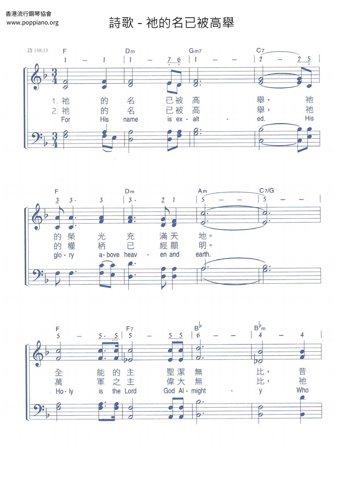
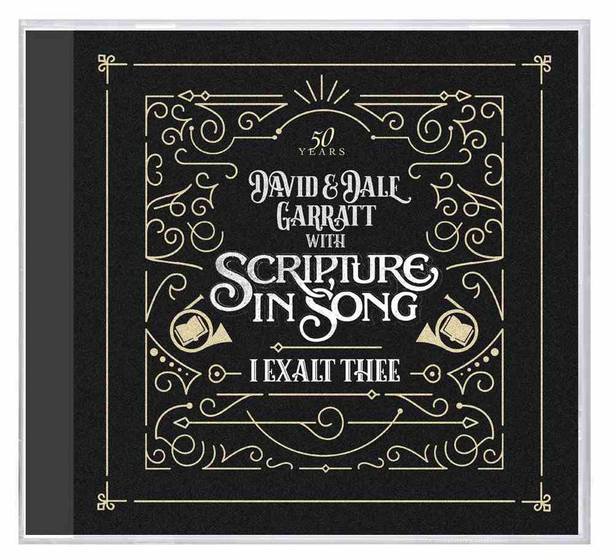
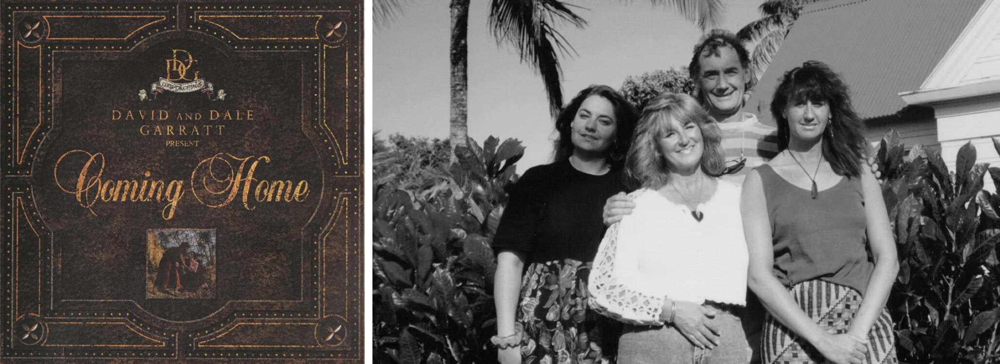

|
For His Name Is Exalted |
【祂的名已被高舉】 |
For His name is exalted,
|
|
|
https://www.poppiano.org/sheet/?id=34241 祂的名已被高舉
 |
|
|
|
|

【祂的名已被高舉】詩集：新歌頌揚，69 https://youtu.be/piAL7w2xw8s -
For His Name Is Exalted
https://youtu.be/gR-JNdqhtZI https://youtu.be/1V3AhPRuEak
| Text: | For His name is exalted |
| Author: | Dale Garratt |
| Tune: | [For His name is exalted] |
| Arranger: | David Peacock |
| Composer: | Dale Garratt |
Dale Garratt
GARRATT, Dale. b. Auckland, New Zealand, 1939. With her husband David Garratt (b. Wellington, 1938), whom she met in 1962 through the Youth for Christ movement, she worked as a musical evangelist, singing at youth conventions and gospel meetings. In 1963 the pair withdrew to refocus their ministry on incorporating scripture into contemporary worship music. They were married in 1964. Their first album, Scripture put to Song (1968) has been recognised as the initiator of the modern praise and worship movement in New Zealand and elsewhere.
| Tune Information | |
|---|---|
| Name: | [For His name is exalted] |
| Composer: | Dale Garratt |
| Arranger: | David Peacock |
| Key: | F Major or modal |
| Copyright: | © 1972 Scripture in Song, a division of Integrity Music, admin. by Kingsway's Thankyou Music |


Scripture in Song Wikipedia
Scripture in Song Recordings Limited was the name of a recording company registered in 1973 by Dave and Dale Garratt of New Zealand, with the aim of better incorporating scripture into contemporary worship music. The Garratts produced a series of albums and songbooks of the same name, and became leading musicians and songwriters in the Charismatic movement in the 1970s and 80s. They have gone on to become leading figures in the global school of ethnodoxology, a discipline which helps indigenous cultures understand and express Christian doctrine in their own musical forms.
The company was struck off by the New Zealand Companies Office in 2002.[1]
The term Scripture in Song is also used more widely to describe the movement to incorporate scripture within contemporary worship music.
Albums[edit]
Albums produced in the Scripture in Song series include:[2]
- The Early Years 1968-1985 (1993)
- Scripture in Song (1968)
- Thou Art Worthy (1970)
- Prepare Ye The Way (1972)
- Praise The Name Of Jesus (1974)
- All Thy Works Shall Praise Thee (1977)
- Songs of Praise - Scripture in Song (1980)
- Songs of the Kingdom (1981)
- Call To War (1983)
- Songs Of The Nations: All Heaven (1993)
- Songs Of The Nations: We Will Triumph (1993)
- Songs Of The Nations: Come With Praise (1993)
- Songs Of The Nations: Celebrate (1993)
Website https://www.scriptureinsong.org/
https://en.wikipedia.org/wiki/Scripture_in_Song